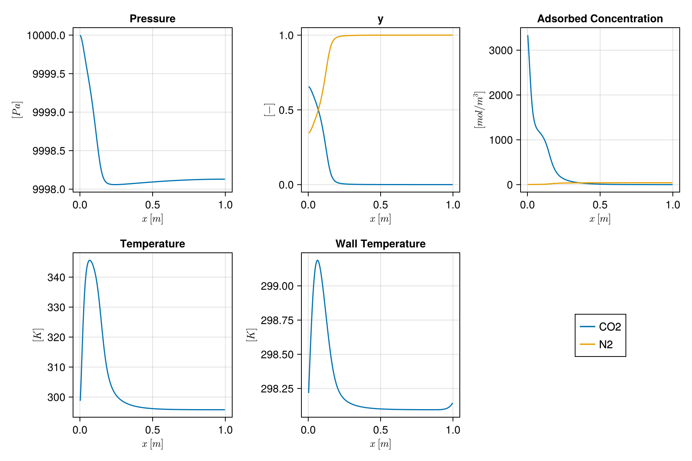

Cyclic VSA simulation with explicit parameter setup
This example sets up a four-stage vacuum swing adsorption (VSA) process by constructing each component explicitly. It shows how to compose an isotherm, mass transfer model, system, domain, and boundary conditions from individual physical parameters. This should act as a minimal example for users who want to set up a custom simulation.
The column separates a CO₂/N₂ mixture on Zeolite 13X.
import Jutul
import Jutul: si_unit
import Mocca
using StaticArrays1. Define the physics
Dual-site Langmuir isotherm for CO₂/N₂ on Zeolite 13X
isotherm = Mocca.DualSiteLangmuir(
qsb = SVector(3489.44, 6613.551), # saturation loading, site b [mol/m³]
b0 = SVector(8.65e-7, 2.5e-6), # pre-exponential factor [m³/mol]
ΔUb = SVector(-36641.21, -15800.0), # adsorption energy, site b [J/mol]
qsd = SVector(2872.35, 0.0), # saturation loading, site d [mol/m³]
d0 = SVector(2.63e-8, 0.0), # pre-exponential factor [m³/mol]
ΔUd = SVector(-35690.66, 0.0), # adsorption energy, site d [J/mol]
)DualSiteLangmuir{2, Float64}([3489.44, 6613.551], [8.65e-7, 2.5e-6], [-36641.21, -15800.0], [2872.35, 0.0], [2.63e-8, 0.0], [-35690.66, 0.0], [-38690.992593180876, -19002.32622975046])Particle and transport properties
D_m = 1.6e-5 # molecular diffusivity [m²/s]
d_p = 2e-3 # particle diameter [m]
mass_transfer = Mocca.LinearDrivingForce(
D_m = D_m,
τ = 3.0, # tortuosity [-]
ϵ_p = 0.35, # particle porosity [-]
d_p = d_p,
)LinearDrivingForce{Float64}(1.6e-5, 3.0, 0.35, 0.002)Assemble the adsorption system
system = Mocca.AdsorptionSystem(
isotherm = isotherm,
mass_transfer = mass_transfer,
molecular_masses = SVector(44.01e-3, 28.0e-3), # [kg/mol]
component_names = ["CO2", "N2"],
heat_capacity_gas = SVector(697.5687, 1096.4), # C_pg [J/(kg·K)]
heat_capacity_adsorbed = SVector(697.5687, 1096.4), # C_pa [J/(kg·K)]
)AdsorptionSystem{2, Float64, DualSiteLangmuir{2, Float64}, LinearDrivingForce{Float64}}(["CO2", "N2"], [0.04401, 0.028], [697.5687, 1096.4], [697.5687, 1096.4], DualSiteLangmuir{2, Float64}([3489.44, 6613.551], [8.65e-7, 2.5e-6], [-36641.21, -15800.0], [2872.35, 0.0], [2.63e-8, 0.0], [-35690.66, 0.0], [-38690.992593180876, -19002.32622975046]), LinearDrivingForce{Float64}(1.6e-5, 3.0, 0.35, 0.002))2. Build the column domain
ncells = 200
L = 1.0 # column length [m]
r_in = 0.1445 # inner radius [m]
r_out = 0.162 # outer wall radius [m]
porosity = 0.37 # bed porosity [-]
permeability = Mocca.compute_permeability(porosity, d_p)
dispersion = Mocca.compute_dispersion(D_m, 1.0, d_p)
mesh = Mocca.column_mesh(ncells, L, r_in)
domain = Mocca.mocca_domain(mesh;
porosity = porosity,
permeability = permeability,
r_in = r_in,
r_out = r_out,
diffusion_coefficient = dispersion,
thermal_conductivity = 0.0903, # K_z [W/(m·K)]
adsorbent_density = 1130.0, # ρ_s [kg/m³]
adsorbent_heat_capacity = 1070.0, # C_ps [J/(kg·K)]
wall_density = 7800.0, # ρ_w [kg/m³]
wall_heat_capacity = 502.0, # C_pw [J/(kg·K)]
wall_conductivity = 16.0, # K_w [W/(m·K)]
fluid_viscosity = 1.72e-5, # μ [Pa·s]
fluid_density = 1.22638310956, # ρ_g [kg/m³]
inner_htc = 8.6, # h_in [W/(m²·K)]
outer_htc = 2.5, # h_out[W/(m²·K)]
ambient_temperature = 298.15, # T_a [K]
)DataDomain wrapping CartesianMesh (3D) with 200x1x1=200 cells with 29 data fields added:
200 Jutul.Cells
:porosity => 200 Vector{Float64}
:permeability => 200 Vector{Float64}
:cell_centroids => 3×200 Matrix{Float64}
:volumes => 200 Vector{Float64}
:dx => 200 Vector{Float64}
199 Jutul.Faces
:neighbors => 2×199 Matrix{Int64}
:areas => 199 Vector{Float64}
:normals => 3×199 Matrix{Float64}
:face_centroids => 3×199 Matrix{Float64}
398 Jutul.HalfFaces
:half_face_cells => 398 Vector{Int64}
:half_face_faces => 398 Vector{Int64}
802 Jutul.BoundaryFaces
:boundary_areas => 802 Vector{Float64}
:boundary_centroids => 3×802 Matrix{Float64}
:boundary_normals => 3×802 Matrix{Float64}
:boundary_neighbors => 802 Vector{Int64}
1 Column
:r_in => 1 Vector{Float64}
:r_out => 1 Vector{Float64}
:diffusion_coefficient => 1 Vector{Float64}
:thermal_conductivity => 1 Vector{Float64}
:adsorbent_density => 1 Vector{Float64}
:adsorbent_heat_capacity => 1 Vector{Float64}
:wall_density => 1 Vector{Float64}
:wall_heat_capacity => 1 Vector{Float64}
:wall_conductivity => 1 Vector{Float64}
:fluid_viscosity => 1 Vector{Float64}
:fluid_density => 1 Vector{Float64}
:inner_htc => 1 Vector{Float64}
:outer_htc => 1 Vector{Float64}
:ambient_temperature => 1 Vector{Float64}
3. Create the model, initial state and parameters
model = Mocca.setup_process_model(system, domain)
bar = si_unit(:bar)
state0 = Mocca.setup_process_state(model;
Pressure = 1 * bar,
Temperature = 298.15,
WallTemperature = 298.15,
y = [1e-10, 1.0 - 1e-10],
)
parameters = Mocca.setup_process_parameters(model)Dict{Symbol, Any} with 19 entries:
:Transmissibilities => [4.46487e-8, 4.46487e-8, 4.46487e-8, 4.46487e…
:AdsorbentDensity => [1130.0]
:OuterHeatTransferCoeff => [2.5]
:InnerHeatTransferCoeff => [8.6]
:SolidVolume => [0.000206631, 0.000206631, 0.000206631, 0.000…
:WallAreaIn => [0.0045396, 0.0045396, 0.0045396, 0.0045396, …
:DiffusionTransmissibilities => [0.00490856, 0.00490856, 0.00490856, 0.004908…
:AdsorbentHeatCapacity => [1070.0]
:AmbientTemperature => [298.15]
:WallCrossSectionArea => [0.0168507]
:FluidViscosity => [1.72e-5]
:WallDensity => [7800.0]
:WallConductivity => [16.0]
:WallAreaOut => [0.00508938, 0.00508938, 0.00508938, 0.005089…
:CellDx => [0.005, 0.005, 0.005, 0.005, 0.005, 0.005, 0.…
:ThermalConductivities => [1.18469, 1.18469, 1.18469, 1.18469, 1.18469,…
:FluidVolume => [0.000121355, 0.000121355, 0.000121355, 0.000…
:WallHeatCapacity => [502.0]
:FluidDensity => [1.22638]4. Boundary conditions for each stage
y_feed = SVector(0.15, 0.85)
T_feed = 298.15
p_high = 1e5
p_low = 0.1e5
p_inter = 0.2e5
λ = 0.5
stage_times = [15.0, 15.0, 30.0, 40.0]
bcs = [
Mocca.PressurisationBC(y_feed = y_feed, PH = p_high, PL = p_low, λ = λ, T_feed = T_feed),
Mocca.AdsorptionBC(y_feed = y_feed, PH = p_high, v_feed = 0.37, T_feed = T_feed),
Mocca.BlowdownBC(PH = p_high, PI = p_inter, λ = λ),
Mocca.EvacuationBC(PL = p_low, PI = p_inter, λ = λ),
]4-element Vector{Any}:
Mocca.PressurisationBC{Float64, 2}
y_feed: StaticArraysCore.SVector{2, Float64}
PH: Float64 100000.0
PL: Float64 10000.0
λ: Float64 0.5
T_feed: Float64 298.15
stage_start: Float64 0.0
Mocca.AdsorptionBC{Float64, 2}
y_feed: StaticArraysCore.SVector{2, Float64}
PH: Float64 100000.0
v_feed: Float64 0.37
T_feed: Float64 298.15
Mocca.BlowdownBC{Float64}
PH: Float64 100000.0
PI: Float64 20000.0
λ: Float64 0.5
stage_start: Float64 0.0
Mocca.EvacuationBC{Float64}
PL: Float64 10000.0
PI: Float64 20000.0
λ: Float64 0.5
stage_start: Float64 0.0
5. Assemble forces and simulate
sim_forces, timesteps = Mocca.setup_forces(model, stage_times, bcs;
num_cycles = 3, max_dt = 1.0)
case = Mocca.MoccaCase(model, timesteps, sim_forces;
state0 = state0, parameters = parameters)
states, timesteps_out = Mocca.simulate_process(case;
output_substates = true,
info_level = 0,
)(OrderedCollections.OrderedDict{Symbol, Any}[OrderedCollections.OrderedDict(:Pressure => [45353.269621329026, 45469.679187233625, 45585.041031128756, 45699.4468974994, 45812.90675166647, 45925.429008042265, 46037.02190855787, 46147.69354770629, 46257.451876359875, 46366.30470514188 … 55452.061553216176, 55456.081243010936, 55459.65396647988, 55462.77984307531, 55465.45897683802, 55467.691456410525, 55469.47735504845, 55470.8167306298, 55471.70962566219, 55472.15606728812], :y => [0.305816596356363 0.004801391498988073 … 1.4061081353332642e-10 1.406103118192169e-10; 0.6941834036436371 0.9951986085010119 … 0.9999999998593893 0.9999999998593897], :AdsorbedConcentration => [152.0048032201061 2.465650922043026 … 3.071539295802476e-5 3.071539327656103e-5; 16.606131413124437 196.29079993271125 … 253.78935865076096 253.79055595152298], :Temperature => [295.404291867567, 296.9830424308857, 297.07858845287376, 297.0828868815415, 297.0852198250829, 297.08750086183335, 297.08976225463243, 297.09200469574387, 297.09422836117113, 297.0964334156102 … 297.27952464893036, 297.27960524491516, 297.2796768818113, 297.27973956213054, 297.27979328806134, 297.27983806146983, 297.2798738839036, 297.27990075662115, 297.27991868081915, 297.27992765919504], :WallTemperature => [298.149765677646, 298.149851129462, 298.149870525035, 298.1498733707348, 298.1498739675117, 298.1498742780076, 298.14987455066716, 298.14987481663434, 298.1498750798231, 298.14987534074015 … 298.1498970044369, 298.14989701397434, 298.14989702246015, 298.1498970299533, 298.1498970369238, 298.14989704712605, 298.14989709057176, 298.14989740717306, 298.14989991478404, 298.14991994471205]), OrderedCollections.OrderedDict(:Pressure => [66892.94269091116, 66889.04816730996, 66884.91127091952, 66880.45437254036, 66875.70272974127, 66870.70044983596, 66865.49792737873, 66860.14491980462, 66854.68652032685, 66849.16131960007 … 66473.90009293778, 66473.8008912709, 66473.71278177932, 66473.63573983494, 66473.56974389058, 66473.51477547902, 66473.47081921237, 66473.43786278131, 66473.41589695476, 66473.40491557938], :y => [0.11640152716540986 0.07544928532496496 … 1.4129992702136104e-10 1.4129978122246732e-10; 0.8835984728345904 0.9245507146750351 … 0.9999999998587001 0.9999999998587001], :AdsorbedConcentration => [233.94972232851737 58.48949357020135 … 3.0715539034879625e-5 3.071553921529817e-5; 27.783430676420753 51.11869205533977 … 254.8867742214806 254.88703821267347], :Temperature => [298.09858949050687, 297.6752352521222, 297.1117579252853, 296.8885438483821, 296.81608388627575, 296.823831107903, 296.8702890826056, 296.9308088936864, 296.99186170017015, 297.0469232875799 … 297.28824987311026, 297.2882670574389, 297.2882823352318, 297.2882957065697, 297.2883071715219, 297.28831673014895, 297.2883243825224, 297.28833012885866, 297.2883339704032, 297.28833591442907], :WallTemperature => [298.1498159081436, 298.14979208616995, 298.1497505673431, 298.14972659614494, 298.1497176908549, 298.1497181702179, 298.1497234587364, 298.14973061285093, 298.14973796470167, 298.14974468749506 … 298.1497950573725, 298.1497950689511, 298.14979507931065, 298.14979508886336, 298.1497951005378, 298.14979513482416, 298.1497953321843, 298.1497966289349, 298.14980501883605, 298.1498564957474]), OrderedCollections.OrderedDict(:Pressure => [79924.91505263236, 79911.82089860187, 79898.93828155327, 79886.23288247148, 79873.62231852673, 79861.02865277528, 79848.38412795114, 79835.6334360347, 79822.73455410758, 79809.65834128938 … 78248.69568726215, 78247.92238582684, 78247.2350252389, 78246.63359894254, 78246.11810121311, 78245.68852715708, 78245.34487271208, 78245.08713464701, 78244.91531056193, 78244.82939888818], :y => [0.13963977436032615 0.12183900095670668 … 1.2694708340445825e-10 1.269471540933373e-10; 0.8603602256396741 0.8781609990432934 … 0.999999999873053 0.9999999998730528], :AdsorbedConcentration => [346.7640470441341 162.39569053782702 … 3.0719746220019596e-5 3.07197463514577e-5; 25.44342219742464 30.006451764641355 … 286.24279484177623 286.2426340228978], :Temperature => [300.8212036810957, 300.81648675014293, 299.84548332888545, 299.0747304860342, 298.49323330470924, 298.05253682857386, 297.71916188222275, 297.4699405046494, 297.2877085522682, 297.1590036662124 … 297.525263467187, 297.5252517555718, 297.52524134858095, 297.5252322460647, 297.5252244478943, 297.525217953971, 297.525212764286, 297.52520887927716, 297.5252063018399, 297.5252050466563], :WallTemperature => [298.1500981781493, 298.1500875993242, 298.1499545135888, 298.1498415968033, 298.1497625972627, 298.1497096066454, 298.1496745090862, 298.1496515524097, 298.1496369331048, 298.1496281535975 … 298.1497211699842, 298.14972118021524, 298.14972118960253, 298.1497211997416, 298.14972122081974, 298.14972131603656, 298.14972186296524, 298.1497250045924, 298.14974203393234, 298.1498258263648]), OrderedCollections.OrderedDict(:Pressure => [87826.78126400415, 87812.92331376448, 87799.26982450868, 87785.89055789818, 87772.76018496505, 87759.84164054388, 87747.09932174344, 87734.50061230788, 87722.01601081164, 87709.6192209116 … 86451.59918887196, 86450.96797228784, 86450.40688961424, 86449.91594127464, 86449.49512764662, 86449.14444906182, 86448.863905806, 86448.65349811906, 86448.51322619502, 86448.44309018197], :y => [0.14066525666376706 0.12473644050683519 … 1.1601752662229763e-10 1.1601760867057257e-10; 0.8593347433362333 0.8752635594931649 … 0.9999999998839825 0.9999999998839822], :AdsorbedConcentration => [466.14037941169977 274.00439556492205 … 3.0723294650622624e-5 3.072329478368329e-5; 26.611493088512226 30.942949359885535 … 315.0787549575797 315.0785359787234], :Temperature => [302.9644348085203, 304.16868264782494, 303.17418110218034, 302.05526110329373, 301.0978332781833, 300.3035825214504, 299.64663516906325, 299.10517314973174, 298.6622691552524, 298.30418018493594 … 297.7432359119592, 297.743220221263, 297.74320627691554, 297.7431940788513, 297.7431836270191, 297.74317492140597, 297.74316796217335, 297.743162750376, 297.7431592914714, 297.743157608792], :WallTemperature => [298.15052867606744, 298.150734650941, 298.15054245492286, 298.1503102938268, 298.15011850847617, 298.14997006954934, 298.14985591962443, 298.1497679368529, 298.1497002258265, 298.14964856906 … 298.14967308492476, 298.14967309342103, 298.1496731018942, 298.1496731148557, 298.14967315841744, 298.149673377746, 298.14967453868593, 298.14968040398776, 298.1497076468374, 298.1498187834209]), OrderedCollections.OrderedDict(:Pressure => [92618.03366392155, 92606.67696185828, 92595.47474247124, 92584.52597906544, 92573.82269314348, 92563.33734035505, 92553.04268519235, 92542.91511260312, 92532.93487590906, 92523.08587598614 … 91681.44157828912, 91681.02540452937, 91680.65546795363, 91680.33177008589, 91680.05431226252, 91679.8230956323, 91679.63812115636, 91679.49938960826, 91679.40690157391, 91679.36065745153], :y => [0.1389917249911666 0.12100580851192426 … 1.094110536514338e-10 1.0941110891529674e-10; 0.8610082750088337 0.8789941914880758 … 0.999999999890589 0.9999999998905889], :AdsorbedConcentration => [584.7958403821044 382.7549579165728 … 3.072564827248879e-5 3.072564841539838e-5; 28.20326536977502 34.13654043769623 … 335.35260141980814 335.3524316244712], :Temperature => [304.82289985572834, 307.2901451485004, 306.36544101173894, 304.9385220711929, 303.6184771236342, 302.48396015099684, 301.5236061229677, 300.7171769596992, 300.0463925052348, 299.49509796462803 … 297.89652317301994, 297.89651082199316, 297.8964998460436, 297.89649024514677, 297.8964820192943, 297.8964751685448, 297.89646969328226, 297.89646559543365, 297.89646288368095, 297.89646159012597], :WallTemperature => [298.15106909863334, 298.15168341288677, 298.15148638168034, 298.1511177336011, 298.15077518159234, 298.1504917203984, 298.15026240253445, 298.1500777071014, 298.1499296237617, 298.1498119407627 … 298.14964314455744, 298.1496431519002, 298.1496431607748, 298.1496431815921, 298.14964326938633, 298.14964370081736, 298.1496457789287, 298.14965512104874, 298.14969301072114, 298.14982462487467]), OrderedCollections.OrderedDict(:Pressure => [95523.3785162772, 95514.95706740924, 95506.66447774817, 95498.59310932607, 95490.7391449662, 95483.07915372709, 95475.59051255746, 95468.25542264477, 95461.0612277428, 95453.99993031853 … 94926.8902860214, 94926.63206391598, 94926.40252965208, 94926.2016844627, 94926.02952942785, 94925.88606547442, 94925.7712933763, 94925.6852137543, 94925.62782707617, 94925.59913365646], :y => [0.13564417583899774 0.11391413890410428 … 1.0555929926102127e-10 1.055593327966497e-10; 0.8643558241610027 0.8860858610958957 … 0.9999999998944407 0.9999999998944407], :AdsorbedConcentration => [698.4715526881447 483.19139370304566 … 3.072710931715472e-5 3.07271094678985e-5; 30.137400735875396 38.35683421339656 … 348.4006651811563 348.4005523476619], :Temperature => [306.6122677732951, 310.11795414218335, 309.20463235283745, 307.45413497756573, 305.7649136773966, 304.2962741596136, 303.053286148475, 302.0158896034734, 301.16147860612483, 300.4678158509239 … 297.99519727029946, 297.99518880081393, 297.99518127507906, 297.9951746930758, 297.995169054813, 297.99516436042103, 297.995160610583, 297.99515780836396, 297.99515596615294, 297.9951551241943], :WallTemperature => [298.1517052383325, 298.1528825221533, 298.1527338906243, 298.15221657536273, 298.1516879023787, 298.1512316749709, 298.1508537674809, 298.1505446696596, 298.1502940664743, 298.1500930948258 … 298.1496248841977, 298.14962489120427, 298.14962490258506, 298.14962493913293, 298.14962510188997, 298.14962585372643, 298.1496291590433, 298.14964253192574, 298.1496906479481, 298.14983612072194]), OrderedCollections.OrderedDict(:Pressure => [97285.20079785679, 97279.29381320544, 97273.50611413647, 97267.90732629896, 97262.4922977197, 97257.24207209541, 97252.14088437069, 97247.17923331121, 97242.35332538994, 97237.66351551749 … 96917.38126214614, 96917.22416802542, 96917.08452651359, 96916.96233841882, 96916.85760444867, 96916.77032521008, 96916.70050120933, 96916.64813285207, 96916.6132204433, 96916.59576418722], :y => [0.1303018666884919 0.10374206371523648 … 1.0330726299397295e-10 1.0330728297471512e-10; 0.8696981333115086 0.8962579362847636 … 0.9999999998966927 0.9999999998966927], :AdsorbedConcentration => [804.0875420556977 571.7016450554645 … 3.072799769559026e-5 3.072799785125406e-5; 32.62830741618479 43.864785133520805 … 356.5097201578737 356.5096493544967], :Temperature => [308.40347446567625, 312.62185220253866, 311.59279586496683, 309.4887983272795, 307.44018293919487, 305.6721656410011, 304.1989441740163, 302.9931509472762, 302.020045809553, 301.24401613742845 … 298.05652956906806, 298.05652397084737, 298.05651899735614, 298.05651464857266, 298.0565109245238, 298.05650782544035, 298.05650535241034, 298.05650350989794, 298.05650231429206, 298.0565018129076], :WallTemperature => [298.15242769155736, 298.15428179110785, 298.154223059854, 298.1535465151528, 298.1528006485019, 298.1521391549365, 298.15158562714663, 298.1511317018147, 298.1507638832127, 298.1504692227598 … 298.1496138837724, 298.1496138913999, 298.14961390827773, 298.14961397165445, 298.14961424888196, 298.1496154432672, 298.1496202657691, 298.14963800513567, 298.14969539442575, 298.14984922460843]), OrderedCollections.OrderedDict(:Pressure => [98353.60075205928, 98349.62773637725, 98345.76863167126, 98342.06769055934, 98338.51875926882, 98335.109791411, 98331.83407661114, 98328.69055729319, 98325.68115008912, 98322.80762939272 … 98130.72319967089, 98130.6282159967, 98130.54378465867, 98130.46990615242, 98130.4065809117, 98130.35380930854, 98130.31159165308, 98130.2799281937, 98130.25881911688, 98130.2482645472], :y => [0.12223412848460448 0.09057454670615407 … 1.0197851097263877e-10 1.0197852297366093e-10; 0.877765871515396 0.9094254532938459 … 0.9999999998980215 0.9999999998980215], :AdsorbedConcentration => [898.9791675229241 645.7884850412719 … 3.0728534531530185e-5 3.0728534689989226e-5; 36.02929535783042 51.2686220955844 … 361.47476657144983 361.4747230235373], :Temperature => [310.17522685799764, 314.7601780863906, 313.48972782740327, 311.0268872779116, 308.66600504287015, 306.6688648572422, 305.0409291172164, 303.73365024081323, 302.69040138734954, 301.85790746202616 … 298.0940858886826, 298.0940821583963, 298.09407884530947, 298.0940759494015, 298.09407347073096, 298.09407140967255, 298.0940697678382, 298.09406855132136, 298.0940677806227, 298.094067508845], :WallTemperature => [298.1532228547455, 298.15583011666934, 298.1558898002653, 298.1550462652094, 298.15406016830485, 298.1531701192542, 298.1524228928172, 298.1518113496554, 298.15131706713197, 298.150921176885 … 298.14960732906695, 298.14960733851325, 298.1496073650125, 298.14960746985366, 298.14960790891894, 298.1496096745679, 298.14961626505095, 298.1496385046127, 298.1497039482401, 298.14986193675793]), OrderedCollections.OrderedDict(:Pressure => [99001.50808908814, 98998.93195968874, 98996.46231112328, 98994.12334768107, 98991.91050043331, 98989.81873852627, 98987.84678448936, 98985.99417679869, 98984.25778234671, 98982.63012251559 … 98867.71972631729, 98867.66238902509, 98867.6114217, 98867.56682463948, 98867.52859810383, 98867.49674231626, 98867.4712574628, 98867.4521436924, 98867.43940111675, 98867.43302981036], :y => [0.11073528061831198 0.07523142318180155 … 1.0118824699491787e-10 1.0118825434947374e-10; 0.8892647193816884 0.9247685768181986 … 0.9999999998988117 0.9999999998988117], :AdsorbedConcentration => [980.6943538816105 704.2616577861285 … 3.0728858458882716e-5 3.0728858618783936e-5; 40.87303693006801 61.27499048377722 … 364.49446552136806 364.49443879334535], :Temperature => [311.8519345168366, 316.49997852617815, 314.91624105839304, 312.13379950125415, 309.5366436724511, 307.38530131004217, 305.65658671311394, 304.273707253368, 303.1621593385496, 302.26192627402696 … 298.11692862969835, 298.1169260576926, 298.1169237742057, 298.11692177922555, 298.11692007286126, 298.11691865568287, 298.1169175299459, 298.11691670355805, 298.11691620109127, 298.11691608010807], :WallTemperature => [298.15406997360077, 298.15747619557936, 298.15767484435094, 298.15666296721463, 298.1554241853875, 298.1542917324959, 298.15333906937485, 298.15256001013745, 298.15193014861546, 298.15142416868474 … 298.1496034786352, 298.1496034914797, 298.1496035330968, 298.149603697673, 298.149604352277, 298.1496068174651, 298.14961537649833, 298.1496420822441, 298.14971428560966, 298.14987341319517]), OrderedCollections.OrderedDict(:Pressure => [99394.4290719803, 99392.80816085555, 99391.2832620547, 99389.86569596898, 99388.55215946939, 99387.33905673563, 99386.22190422045, 99385.19285268728, 99384.24043841605, 99383.35130118304 … 99314.42848543824, 99314.39387955276, 99314.36311826225, 99314.33620174434, 99314.31313015454, 99314.29390362611, 99314.27852227015, 99314.26698617556, 99314.25929540895, 99314.25545001467], :y => [0.0959006877583512 0.05958105242176524 … 1.0071556143148348e-10 1.0071556607789582e-10; 0.9040993122416491 0.940418947578235 … 0.9999999998992845 0.9999999998992845], :AdsorbedConcentration => [1047.4413100988727 747.7202086911067 … 3.072905391022739e-5 3.072905407073627e-5; 47.81916278954504 74.20876428154996 … 366.32518824963773 366.32517168383447], :Temperature => [313.34197776710533, 317.8462943658659, 315.9473500344022, 312.9110062957388, 310.14404608276186, 307.8794206703538, 306.0639852765819, 304.6050304078529, 303.424602872944, 302.4645040222681 … 298.1307776858608, 298.1307758189448, 298.1307741622199, 298.1307727156911, 298.1307714795398, 298.13077045458687, 298.1307696438448, 298.1307690571705, 298.1307687230496, 298.13076870223574], :WallTemperature => [298.15494264321734, 298.15917255068905, 298.1595293561098, 298.15835588905594, 298.15686075528413, 298.1554774480156, 298.15430950450656, 298.1533530943861, 298.15257855041864, 298.15195459146656 … 298.1496012681521, 298.1496012864894, 298.1496013502689, 298.14960159634273, 298.1496025246079, 298.1496058111432, 298.14961648495097, 298.1496474953195, 298.1497252086633, 298.14988341056255]) … OrderedCollections.OrderedDict(:Pressure => [10000.004950272341, 9999.986551343529, 9999.952720340063, 9999.908462419082, 9999.857913007982, 9999.804435967231, 9999.750427150011, 9999.697238626131, 9999.64529984347, 9999.594374147633 … 9998.382200492153, 9998.382376410424, 9998.38253284276, 9998.3826697765, 9998.382787198088, 9998.382885092833, 9998.382963444625, 9998.383022235654, 9998.38306144636, 9998.383081057118], :y => [0.6632590523057807 0.6587522791370619 … 7.557328541678048e-8 7.089132117293944e-8; 0.3367409476942191 0.34124772086293775 … 0.9999999244267153 0.9999999291086795], :AdsorbedConcentration => [3346.696199208582 3095.0945544065835 … 0.002668565597761591 0.0024557155288421526; 1.8854957102793342 2.1506250701481644 … 41.22726825081416 41.22713428943624], :Temperature => [298.82545996169995, 304.78498734929497, 311.9086588678974, 318.92657900473864, 325.32332108321106, 330.82569317320906, 335.3173262246326, 338.8061893412757, 341.39084600485364, 343.21834139264666 … 295.76351249892497, 295.76350540210984, 295.76351552648066, 295.7635433593564, 295.76358963187323, 295.76365536279803, 295.7637419170246, 295.76385090926215, 295.7639821170501, 295.76411480266324], :WallTemperature => [298.2161515046239, 298.3487802306972, 298.4791112656304, 298.60378064852847, 298.71959251690987, 298.82387263993127, 298.9146486834998, 298.99071766894633, 299.0516198969224, 299.09754091705565 … 298.1047883859754, 298.10672417107236, 298.1090661793341, 298.11188353334705, 298.11525943934606, 298.1192963305483, 298.1241216471225, 298.12989301307186, 298.136800891309, 298.1450665033258]), OrderedCollections.OrderedDict(:Pressure => [10000.003219670769, 9999.983180601965, 9999.94795699634, 9999.902434256368, 9999.850635140278, 9999.7958425146, 9999.740412629428, 9999.685697005787, 9999.632151773982, 9999.579579450914 … 9998.296816021955, 9998.296958894962, 9998.2970859506, 9998.297197177364, 9998.297292562691, 9998.297372092728, 9998.297435752034, 9998.297483523316, 9998.297515387363, 9998.297531324768], :y => [0.6624480197333057 0.6579945461753026 … 7.55850480672036e-8 7.090446435606678e-8; 0.3375519802666942 0.34200545382469705 … 0.9999999244149526 0.9999999290955364], :AdsorbedConcentration => [3345.464935951787 3094.3552968274435 … 0.0026688905400182677 0.002456167509993522; 1.891608406257639 2.156736046315375 … 41.226477809230005 41.22634317792879], :Temperature => [298.81515518523014, 304.767239830293, 311.8921328153703, 318.91286409678713, 325.3121479533106, 330.816351703827, 335.3090180386444, 338.7982207911063, 341.3827072646503, 343.20971208617976 … 295.7638724516095, 295.7638656554637, 295.7638761422959, 295.7639044103079, 295.7639512037916, 295.76401755772827, 295.7641048563654, 295.7642147289164, 295.7643468941626, 295.76448021782323], :WallTemperature => [298.2162746324845, 298.3491592484591, 298.4797629468345, 298.60472076072574, 298.720834185867, 298.82542647018164, 298.91652273321796, 298.99291680825615, 299.05414473394774, 299.1003867389085 … 298.1045700952039, 298.10651528341026, 298.10886832454264, 298.1116989703491, 298.11509123856473, 298.11914845788743, 298.12399884508415, 298.1298003783995, 298.1367431153235, 298.1450468948192]), OrderedCollections.OrderedDict(:Pressure => [10000.002070525183, 9999.980959625815, 9999.94490315173, 9999.898670846374, 9999.846173907077, 9999.790613328445, 9999.73430341057, 9999.678591966038, 9999.62395863688, 9999.570242568652 … 9998.237833580915, 9998.237953077396, 9998.238059351748, 9998.238152393269, 9998.238232190093, 9998.23829872894, 9998.238351994836, 9998.238391970819, 9998.23841863791, 9998.23843197683], :y => [0.6616321569159025 0.6572291784190716 … 7.559657427204614e-8 7.091738536433307e-8; 0.33836784308409745 0.3427708215809281 … 0.9999999244034263 0.9999999290826154], :AdsorbedConcentration => [3344.2508030237973 3093.628783945877 … 0.0026692155728542653 0.0024566193626859834; 1.8977922645828265 2.1629438718299654 … 41.22581378559401 41.225678484669274], :Temperature => [298.80532278752696, 304.7499017456561, 311.87581144893255, 318.8991798207386, 325.3008851197866, 330.80686093236176, 335.3005556913648, 338.79013053632445, 341.3744965051103, 343.2010616042657 … 295.76423326186404, 295.7642267681991, 295.7642376195212, 295.76426632501347, 295.7643136422482, 295.7643806225525, 295.7644686695985, 295.7645794268233, 295.7647125529646, 295.76484651894066], :WallTemperature => [298.21639808683693, 298.34953884635456, 298.48041515504656, 298.60566124657845, 298.7220760458997, 298.8269802200371, 298.9183962440548, 298.995114708523, 299.0566674104215, 299.1032293394853 … 298.1043520821899, 298.1063067427008, 298.1086709171922, 298.1115149826369, 298.11492375150544, 298.1190014149273, 298.1238769184142, 298.12970854318013, 298.1366859105014, 298.14502749518545]), OrderedCollections.OrderedDict(:Pressure => [10000.001303581075, 9999.979519876008, 9999.943021368623, 9999.896466464907, 9999.843656941295, 9999.787712228243, 9999.73090335886, 9999.67457201043, 9999.619218582782, 9999.564716465049 … 9998.197505922986, 9998.197608892016, 9998.197700473842, 9998.197780658318, 9998.197849434062, 9998.197906788184, 9998.197952706018, 9998.19798717082, 9998.198010163744, 9998.198021665592], :y => [0.6608159411235784 0.6564610936861176 … 7.560793358555002e-8 7.093014886453589e-8; 0.3391840588764215 0.3435389063138821 … 0.999999924392067 0.9999999290698519], :AdsorbedConcentration => [3343.0529841574844 3092.914261750018 … 0.0026695406926689215 0.0024570710840799066; 1.9040097818216488 2.169202856300342 … 41.22523913963874 41.22510316811108], :Temperature => [298.795938218871, 304.7329527728546, 311.85968074070075, 318.88551619027754, 325.28952434826755, 330.7972121503159, 335.29192839586455, 338.7819051439525, 341.366197993349, 343.1923727456748 … 295.7645946519977, 295.7645884625352, 295.76459968030207, 295.76462882556, 295.7646766692839, 295.76474427927246, 295.7648330786852, 295.764944724892, 295.7650788153164, 295.765213427787], :WallTemperature => [298.2165218589957, 298.34991902059966, 298.48106789383166, 298.6066021015092, 298.72331807091695, 298.8285338422225, 298.9202691596108, 298.99731131969276, 299.05918789434895, 299.1060687097485 … 298.10413435131113, 298.10609855385735, 298.1084739614163, 298.1113315715075, 298.1147569741022, 298.11885519007564, 298.12375584773866, 298.12961748369895, 298.13662925638147, 298.1450082961258]), OrderedCollections.OrderedDict(:Pressure => [10000.000789216192, 9999.978611930199, 9999.941942751575, 9999.895333149014, 9999.842478280942, 9999.786417124116, 9999.729376858819, 9999.672691152246, 9999.61687874944, 9999.561845051474 … 9998.170347622978, 9998.170438914893, 9998.170520116091, 9998.170591216816, 9998.170652206007, 9998.170703071044, 9998.170743797453, 9998.170774368627, 9998.170794765787, 9998.170804969772], :y => [0.660002421721092 0.6556936601094646 … 7.561917527508742e-8 7.094280066416254e-8; 0.33999757827890786 0.3443063398905351 … 0.9999999243808253 0.9999999290572001], :AdsorbedConcentration => [3341.870769778401 3092.211097409935 … 0.0026698658968693023 0.0024575226722317062; 1.9102350807925752 2.175481449689091 … 41.224727640621374 41.22459099662548], :Temperature => [298.7869801656468, 304.7163753982455, 311.8437298483926, 318.87186710948447, 325.2780620179151, 330.7874018270747, 335.28313086844554, 338.7735367682585, 341.3578014787842, 343.1836335742396 … 295.764956425377, 295.76495054177815, 295.76496212789647, 295.76499171516923, 295.7650400880929, 295.76510833105846, 295.76519788676706, 295.7653104262212, 295.765445484274, 295.76558074733504], :WallTemperature => [298.21664594085, 298.3502997658025, 298.48172116335354, 298.6075433182772, 298.7245602343847, 298.8300872907957, 298.92214142520396, 298.999506592624, 299.06170615334645, 299.1089048390823 … 298.10391690681627, 298.105890721554, 298.10827746099653, 298.1111487378442, 298.11459090195194, 298.11870977171833, 298.1236356142308, 298.1295271773892, 298.1365731338018, 298.14498928995556]), OrderedCollections.OrderedDict(:Pressure => [10000.000442649805, 9999.978066349191, 9999.941413499853, 9999.894933018493, 9999.842216655132, 9999.78622457383, 9999.729140029729, 9999.672287220601, 9999.616201103405, 9999.560817003436 … 9998.15247728887, 9998.15256033672, 9998.152634209242, 9998.152698896938, 9998.152754388972, 9998.152800672886, 9998.152837734335, 9998.152865556778, 9998.152884121464, 9998.152893409238], :y => [0.6591936541392486 0.6549291680999604 … 7.563033422038041e-8 7.095537319499025e-8; 0.3408063458607513 0.34507083190003934 … 0.9999999243696663 0.9999999290446276], :AdsorbedConcentration => [3340.7035303568523 3091.5187470208884 … 0.0026701911835772265 0.0024579741258331724; 1.9164504120066326 2.181757947786705 … 41.22426072244267 41.22412340350597], :Temperature => [298.778429740757, 304.7001541962011, 311.82795017682315, 318.8582291391629, 325.26649762451154, 330.7774299445612, 335.2741616043211, 338.7650214549265, 341.34930057659983, 343.17483589857454 … 295.76531844284364, 295.7653128667299, 295.7653248230768, 295.76535485459283, 295.7654037594124, 295.765472638634, 295.765562954547, 295.76567639147714, 295.76581242046615, 295.76594833813454], :WallTemperature => [298.2167703247232, 298.3506810752558, 298.4823749609888, 298.60848488751236, 298.72580250964097, 298.8316405213605, 298.92401298813246, 299.0017004794637, 299.0642221551084, 299.11173771579854 … 298.1036997528282, 298.10568325023263, 298.1080814193788, 298.1109664821461, 298.11442553035783, 298.1185651482621, 298.12351619961754, 298.1294376027686, 298.13651752478535, 298.14497046953653]), OrderedCollections.OrderedDict(:Pressure => [10000.000208124462, 9999.9777676222, 9999.941258628427, 9999.895031818625, 9999.842578973794, 9999.786783425363, 9999.729784788262, 9999.672896645421, 9999.616668262479, 9999.561062934028 … 9998.141149915318, 9998.141227147753, 9998.14129585064, 9998.141356014665, 9998.141407629124, 9998.141450681675, 9998.141485158028, 9998.14151104168, 9998.141528313867, 9998.14153695542], :y => [0.6583910017276629 0.6541691573316998 … 7.564143510216239e-8 7.096788940701004e-8; 0.34160899827233704 0.34583084266829994 … 0.9999999243585654 0.9999999290321114], :AdsorbedConcentration => [3339.5506975251046 3090.836732868127 … 0.002670516551421216 0.0024584254440263528; 1.9226437051731853 2.1880175210239567 … 41.22382525078373 41.22368725402326], :Temperature => [298.77026990995523, 304.6842753219478, 311.8123347246773, 318.8446006404985, 325.2548327397404, 330.7672988346183, 335.26502166729074, 338.75635794414364, 341.3406916214503, 343.16597419049674 … 295.7656806059707, 295.7656753389387, 295.76568766737455, 295.7657181453526, 295.7657675847586, 295.7658371035088, 295.7659281835197, 295.7660425221223, 295.7661795253214, 295.76631610153873], :WallTemperature => [298.21689500325687, 298.35106294115747, 298.4830292818098, 298.60942679812695, 298.72704487010367, 298.83319349116505, 298.92588379780557, 299.00389293387923, 299.06673586773155, 299.11456732750787 … 298.1034828933455, 298.105476144109, 298.1078858396876, 298.11078480455564, 298.11426085436835, 298.11842130816973, 298.1233975861794, 298.12934873937695, 298.13646241243777, 298.1449518282191]), OrderedCollections.OrderedDict(:Pressure => [10000.00004878015, 9999.977636785377, 9999.941357336747, 9999.89546706757, 9999.84336133743, 9999.787848830354, 9999.731026051484, 9999.674195062444, 9999.61791772569, 9999.562183471902 … 9998.134425334636, 9998.134498468778, 9998.13456352854, 9998.13462050472, 9998.134669386702, 9998.1347101622, 9998.13474281696, 9998.134767334464, 9998.13478369593, 9998.134791882156], :y => [0.6575953456390978 0.6534146440960524 … 7.565249537445595e-8 7.098036553156505e-8; 0.342404654360902 0.3465853559039473 … 0.9999999243475052 0.9999999290196353], :AdsorbedConcentration => [3338.4117506200473 3090.16462733287 … 0.0026708419993888895 0.0024588766262722155; 1.928806863069212 2.1942501467735034 … 41.223411939213534 41.223273261475285], :Temperature => [298.76248508312904, 304.6687261525215, 311.7968776286556, 318.8309811805286, 325.24307028841133, 330.75701236859373, 335.2557138414505, 338.7475468268619, 341.33197285541496, 343.1570448161831 … 295.7660428451857, 295.7660378888176, 295.76605059119515, 295.766081517852, 295.7661314945356, 295.7662016560852, 295.76629350407586, 295.7664087485185, 295.7665467291701, 295.766683967806], :WallTemperature => [298.2170199693193, 298.35144535478065, 298.48368411896774, 298.6103690376359, 298.72828728940476, 298.8347461591254, 298.92775380578587, 299.0060839111911, 299.06924725993684, 299.1173936613927 … 298.1032663322428, 298.10526940717784, 298.10769072474005, 298.1106037048838, 298.1140968688123, 298.1182782399894, 298.1232797567458, 298.129260567717, 298.1364077808557, 298.14493335979256]), OrderedCollections.OrderedDict(:Pressure => [9999.999940108875, 9999.97761967963, 9999.94162607178, 9999.89612594144, 9999.844421800082, 9999.789249981794, 9999.73266457855, 9999.675955408082, 9999.619695379188, 9999.563898336937 … 9998.130932503727, 9998.131002753233, 9998.131065248797, 9998.131119981292, 9998.131166940146, 9998.131206113103, 9998.131237485904, 9998.13126104201, 9998.131276762593, 9998.131284628413], :y => [0.6568072318645939 0.6526662806088405 … 7.566352737603817e-8 7.099281304438735e-8; 0.343192768135406 0.34733371939115926 … 0.9999999243364732 0.9999999290071878], :AdsorbedConcentration => [3337.286207044609 3089.5020414651667 … 0.002671167526722095 0.0024593276722573326; 1.9349345643544997 2.2004491590017388 … 41.223014224082334 41.22287486203956], :Temperature => [298.7550608216137, 304.6534950310085, 311.78157384498815, 318.81737112027247, 325.23121404835604, 330.74657539472304, 335.2462420388921, 338.7385899520086, 341.3231438544781, 343.14804549124636 … 295.7664051113337, 295.76640046720473, 295.7664135453755, 295.7664449229311, 295.7664954395883, 295.76656624720937, 295.7666588670528, 295.7667750214762, 295.76691398279337, 295.76705188764794], :WallTemperature => [298.2171452159359, 298.3518283066086, 298.48433946400127, 298.61131159241035, 298.7295297414753, 298.8362984858017, 298.9296229657728, 299.00827336843605, 299.071756301218, 299.12021670440987 … 298.1030500732713, 298.10506304321785, 298.1074960770589, 298.11042318263446, 298.1139335683305, 298.11813593237895, 298.1231626946866, 298.12917306919684, 298.13635361504475, 298.14491505844165]), OrderedCollections.OrderedDict(:Pressure => [9999.999865743946, 9999.977679114749, 9999.942007068652, 9999.896930203331, 9999.845661725647, 9999.790867965316, 9999.734561407522, 9999.67801904668, 9999.621823425232, 9999.566011183248 … 9998.129703433091, 9998.129771655169, 9998.12983234859, 9998.12988550426, 9998.129931111636, 9998.129969158455, 9998.129999630448, 9998.13002251103, 9998.130037781317, 9998.130045422024], :y => [0.6560269736872895 0.6519244658775162 … 7.567453982383227e-8 7.100524005383951e-8; 0.3439730263127105 0.3480755341224836 … 0.9999999243254608 0.9999999289947608], :AdsorbedConcentration => [3336.173615307494 3088.848616818968 … 0.0026714931328427854 0.002459778581827922; 1.941023427198176 2.20661023663565 … 41.22262746938949 41.22248741961184], :Temperature => [298.7479836269283, 304.6385710831297, 311.7664189266734, 318.80377132996546, 325.21926830538274, 330.73599334843146, 335.23661088653955, 338.72949000980935, 341.3142051227975, 343.13897489356646 … 295.76676736971484, 295.7667630393986, 295.76677649521724, 295.7668083258985, 295.7668593852328, 295.76693084220085, 295.7670242377624, 295.7671413062821, 295.76728125144996, 295.7674198262564], :WallTemperature => [298.21727073623725, 298.3522117864443, 298.4849953070873, 298.6122544478804, 298.7307722005969, 298.83785043334507, 298.93149123354937, 299.01046126438257, 299.0742629619379, 299.12303644344115 … 298.10283412005805, 298.10485705579595, 298.1073018988852, 298.1102432370271, 298.11377094740425, 298.1179943741255, 298.12304638390117, 298.12908622607665, 298.13629990084576, 298.1448969187096])], [1.0, 1.0, 1.0, 1.0, 1.0, 1.0, 1.0, 1.0, 1.0, 1.0 … 1.0, 1.0, 1.0, 1.0, 1.0, 1.0, 1.0, 1.0, 1.0, 1.0])6. Visualise
f_outlet = Mocca.plot_cell(states, model, timesteps_out, ncells)
f_column = Mocca.plot_state(states[end], model)
Example on GitHub
If you would like to run this example yourself, it can be downloaded from the Mocca.jl GitHub repository.
This page was generated using Literate.jl.